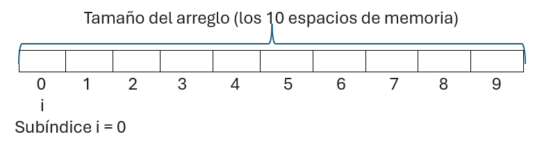
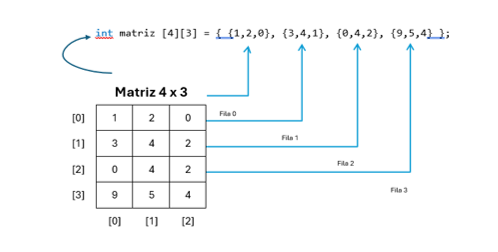
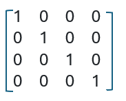
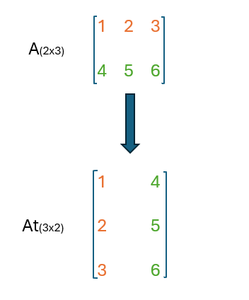
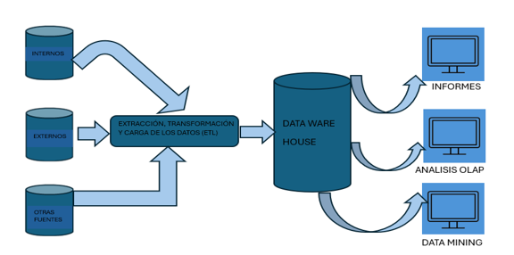

Implementa estructuras de datos estáticas en la memoria de una computadora a partir del uso de arreglos, su representación y sus posibilidades, así como un lenguaje de programación.
- 2.1 Arreglos unidimensionales
- 2.1.1 Representación
- 2.1.2 Formas de uso
- 2.1.3 Implementación
- 2.1.4 Operaciones permitidas
- 2.2 Arreglos bidimensionales
- 2.2.1 Representación
- 2.2.2 Formas de uso
- 2.2.3 Implementación
- 2.2.4 Operaciones permitidas
- 2.3 Arreglos multidimensionales
- 2.3.1 Representación
- 2.3.2 Formas de uso
Figúrense que desean almacenar los nombres de sus 6 primos. Como se vio en la unidad temática I en el tema de las variables, tendrían que crear 6 variables de tipo char separadas e independientes (primo 1, primo 2, primo 3, etc.), pero se pretende almacenar todos los primos bajo un solo nombre Primos. Es similar a una cajonera, donde todos los cajones están juntos en un solo mueble.
A continuación, se rotulan los números de los cajones de izquierda a derecha, quedando de la siguiente forma:
1, 2, 3, 4, 5, 6 (normal)
En la programación, siempre empezamos a contar desde el 0. Los cajones se numeran:
| [ ] | [ ] | [ ] | [ ] | [ ] | [ ] |
| 0 | 1 | 2 | 3 | 4 | 5 |
Si la cajonera tiene capacidad para almacenar 6 primos ¿En qué número de la cajonera se encuentra guardado el último primo?
📊2.1 Arreglos unidimensionales
Un arreglo unidimensional es un tipo de estructuras de datos que consta de un número fijo de elementos de un mismo tipo.
También se considera como una colección finita, es decir, se debe de determinar cuál será el número máximo de elementos que formarán parte del arreglo unidimensional (tamaño del arreglo), donde todos los elementos son del mismo tipo.
Los arreglos unidimensionales se consideran estructuras de datos estáticas, ya que al momento de declarar se les asigna un tamaño, el cual no puede ser modificado durante la ejecución del programa.
Nos preguntamos ¿cómo se declara un arreglo unidimensional?
Utilizando cualquier lenguaje de programación un vector se declara de la siguiente forma:
int Arreglo_Unidimensional [10]; Tipo de dato Nombre_Arreglo Tamaño puede serchar, int o float
📊2.1.1. Representación
La manera de representar un arreglo unidimensional en la memoria es a través de un vector, como se muestra en la figura1, donde se define los espacios de memoria a ocupar, por ejemplo en un lenguaje de programación, los arreglos inician desde cero que es representado por un subíndice(i) para identificar la primera posición de memoria del arreglo unidimensional y si el tamaño es, por ejemplo, en la definición del arreglo anterior int Arreglo_Unidimensional [10], es de 10, eso quiere decir que requerimos de 10 espacios de memoria y el subíndice(i) del último elemento es 9 (10 – 1) porque se inicia desde el subíndice i = 0, como se muestra en la siguiente figura 1:

- 1) Declara un vector de tipo char de tamaño 12, represéntalo como quedaría en memoria utilizando un subíndice (i).
- 2) Declara un arreglo unidimensional de tipo entero de tamaño 10, represéntalo como
quedaría en
memoria
utilizando
un subíndice (i). - 3) Declara un array de tipo flotante de tamaño 8, represéntalo como quedaría en memoria utilizando un subíndice (i).
- 4) Declara un arreglo unidimensional de tipo string de tamaño 15, represéntalo como
quedaría en
memoria
utilizando
un subíndice (i).
📊 Formas de uso
Existen varias maneras de usar los vectores, una es almacenar una colección de datos secuenciales como, por ejemplo, los nombres de jugadores, otra forma es hacer una búsqueda, esto se realiza recorriendo a cada uno de los elementos hasta encontrar el elemento buscado. También se pueden ordenar los elementos del arreglo ya sea de forma del menor al mayor o viceversa.
📝 Actividad UTII_A1 Nombre_Jugadores
Utilizar un lenguaje de programación para declarar el arreglo unidimensional definiéndolo con el tipo de dato string (cadena de caracteres) y en el que se puedan ingresar 6 nombres de jugadores.
La intención de esta actividad es que el estudiante comprenda las operaciones que se realizan sobre un arreglo unidimensional, para este caso es el de asignar valores al arreglo; así como recorrerlo para acceder y mostrar cada uno de sus elementos; por último, realizar una búsqueda.
- 1. Declara el arreglo unidimensional de tipo string que se llame Jugador de tamaño [6], también
declara una variable
de tipo string que se llame Buscar_Jugador. - 2. La forma de asignar los nombres de los jugadores al arreglo unidimensional, será
solicitándole el nombre del
jugador al usuario. Se tendrá que utilizar una estructura de control como es el For. - 3. Al recibir el nombre tendrá que almacenarse en la posición de memoria que está representada
por el subíndice (i)
del arreglo unidimensional. - 4. Después de haber almacenado los nombres de los jugadores en el arreglo, a través de la
estructura de control For,
se recorrerá para mostrar el siguiente mensaje: “En la posición TAL del arreglo, se encuentra el jugador TAL”. - 5. Posteriormente, volver a recorrer el arreglo con la estructura de control For para realizar
la tercera operación que
es la de búsqueda. Para llevar a cabo esta parte, se le pedirá al usuario el nombre del jugador a buscar, el cual será
almacenado en la variable Buscar_Jugador, después se tendrá que recorrer cada uno de los elementos del vector
para compararlo con la variable Buscar_Jugador, y si hay coincidencia se deberá mandar un mensaje “El nombre
del jugador se encuentre en la posición TAL del arreglo unidimensional” y en dado caso que no se encuentre, enviar
el mensaje “El nombre del jugador no se encuentra en el arreglo unidimensional”.
- a) Programa fuente, el nombre de este programa debe de contener las iniciales de su nombre y el
nombre del
programa, por ejemplo, RBV_Programa_Jugador. - b) Programa executable.
- c) Corrida del programa, en un archivo PDF.
📊2.1.3 Implementación
Como ya se menciono para poder hacer uso de un arreglo es necesario reservar un espacio de memoria, dependiendo del tamaño del arreglo, para guardar una lista de elementos que son del mismo tipo. Para acceder a la lista de elementos del arreglo, es necesario utilizar una estructura de control conocida como el FOR. ¿En que consiste esa estructura de control? en repetir un bloque de código varias veces de forma automática mientras se cumpla una condición. El for se conforma de tres partes :
For (inicialización; condición; incremento)
Inicialización: es una variable que es un contador, se debe de definir donde se va a empezar, por ejemplo, i=0.
Condición: El ciclo se va a repetir mientras se cumpla una condición, por ejemplo, que se realice el ciclo mientras i sea menor a 10 i<10 .
Incremento: Cada ves que se ejecute un ciclo, en este caso i se incrementa ya sea de 1 en 1, etc., por ejemplo, i++.
📊2.1.4 Operaciones permitidas
a) Recorrido:
Se recorre el arreglo para consultar los elementos del arreglo unidimensional.
b) Asignación:
Existen tres formas para asignar valores a un arreglo unidimensional
1. Al momento de declarar el arreglo unidimensional o bidimensional se le asignan los valores:
int Arreglo_Unidimensional[10] = {2,4,6,8,10,12,14,16,18,20};
2. Cuando se les piden los valores a los usuarios:
for (int i=0; i < 10; i++) { cout << "Ingrese el valor del Arreglo_Unidimensional[" << i << "]: "; cin >> Arreglo_Unidimensional[i]; }
3. Asignación automática:
int Arreglo_Unidimensional[10]; int Acumulador = 2; for (int i=0; i < 10; i++) { Arreglo_Unidimensional[i] = Acumulador; Acumulador = Acumulador + 2; }
c) Búsqueda:
Recorrer el arreglo unidimensional para encontrar un elemento.
d) Ordenamiento:
Se pueden ordenar los elementos del vector ya sea del menor al mayor o del mayor al menor o de la A a la Z o de la Z a la A.
📝 Actividad UTII_A2_Asignación_Automática
Utilizar un lenguaje de programación para declarar el arreglo unidimensional definiéndolo con el tipo de dato entero (int) y en el que se puedan ingresar 10 números pares.
La intención de esta actividad es que el estudiante comprenda las operaciones que se realizan sobre un arreglo unidimensional, para este caso es el de asignar valores al arreglo, así como recorrerlo para acceder y mostrar cada uno de sus elementos.
- 1. Declara el arreglo unidimensional de tipo int que se llame Numeros_Pares [10],
también declara dos variables de
tipo int que se llamen Acumulador y Suma_Total (asignándoles 0) -
2. Para asignar los números pares (2,4,6,8,10, 12, 14, 16, 18 y 20) al arreglo
unidimensional, será utilizando una
estructura de control For y de forma automática asignándole la variable Acumulador, la cual se ira acumulando de
dos en dos - 3. Después de haber almacenado los números al arreglo, a través de la estructura de
control For, se recorrerá para
mostrar el siguiente mensaje: “En la posición TAL del arreglo, se encuentra el valor TAL”. También deberán
mostrar “La suma total de los elementos del vector es:”
- a) Programa fuente, el nombre de este programa debe de contener las iniciales de su
nombre y el nombre del
programa, por ejemplo, RBV_Programa_Numeros_Pares. - b) Programa executable.
- c) Corrida del programa, en un archivo PDF.
Realiza el siguiente ejercicio:
⏳ Es el momento para evaluar la comprensión del tema con la resolución del siguiente
ejercicio
para evaluar los resultados del ejercicio.
📅 Se tiene el siguiente arreglo de los días de la semana
String Dias_semana[7] = {Lunes, Martes, Miercoles, Jueves, Viernes, Sabado, Domingo}
| Lunes | Martes | Miércoles | Jueves | Viernes | Sábado | Domingo |
| 0 | 1 | 2 | 3 | 4 | 5 | 6 |
1️ . ¿Qué valor devuelve la instrucción: Dias_semana[3]? 🤔
2️ . ¿Qué valor devuelve la instrucción: Dias_semana[0]? 🤔
3️ . ✏️ Si ejecutamos la orden: Dias_semana[5] = NULL ¿Cómo queda la lista completa de datos ahora?
4️. ⚠️ ERROR COMÚN: ¿Qué pasa si intentas pedir: Dias_Sema[7]?
👨🏫 El docente valida las respuestas con todo el grupo:
✅ Jueves
✅ Lunes
✅ [Lunes, Martes, Miercoles, Jueves, Viernes, , Domingo]
✅ Explica el concepto de fuera de limite, como el índice máximo es 6 , pedir la posición 7 provoca que el programa falle porque está intentando leer memoria que no le pertenece.
📝 Evaluación formativa rápida: Cada estudiante debe escribir en su cuaderno la respuesta a la siguiente pregunta: Si tengo un array con los meses del año (12 elementos), ¿cuál es el subíndice del mes de Enero y cuál es el subíndice del mes de Diciembre?
💡 Se llega a la conclusión que la estructura de datos arreglo unidimensional permite guardar un conjunto de datos que son del mismo tipo (homogéneos). Para el acceso a los elementos es de forma instantánea usando su posición (subíndice).
📊2.2 Arreglos Bidimensionales (Matrices/Tablas)
Imagínense que se necesita llevar el control de la asignación de asientos de un avión, ¿Consideran que con la estructura de datos arreglo unidimensional (una fila de casilleros) vista en el tema anterior es suficiente para cumplir con lo que se requiere? 🤔 Para contestar la pregunta anterior se debe de realizar un análisis. 🚫 Con un arreglo unidimensional no es suficiente, porque los asientos de un avión constan de varias filas y de varias columnas y el arreglo unidimensional nada más consta de una sola fila, como su nombre lo dice una dimensión. 📊 Entonces se requiere de un arreglo bidimensional (dos dimensiones), así es, es lo que se conoce comúnmente como una matriz.
Para continuar es necesario contestar la siguiente pregunta
¿Qué es un "Arreglo bidimensional"?
Un arreglo bidimensional es un vector de vectores.
Es un conjunto de elementos, todos del mismo tipo, en los que el orden de los componentes es significativo y en el que se necesitan dos subíndices [i][j] para definir cualquier elemento. Donde el primer índice representa las filas y el segundo las columnas. También se le conoce como tabla o matriz.
La diferencia que existe entre un arreglo unidimensional a un arreglo bidimensional, que el primero solo necesita un subíndice [i] y el arreglo bidimensional requiere de dos subíndices [i][j]. El arreglo bidimensional se conoce también como matriz o tabla que consta de filas y columnas. Haber, se menciona de una tabla, esto quiere decir que estamos hablando de una base de datos, así es, porque la estructura de datos que se utiliza para almacenar la información de una base de datos son tablas, donde se pueden guardar varios nombres por fila con sus respectivos atributos (columnas), en cambio en un arreglo unidimensional no se podría hacer.
Otra gran diferencia es que para recorrer un arreglo unidimensional se requiere de una estructura de control de un ciclo for, en cambio para recorrer un arreglo bidimensional se requiere de dos ciclos for. Si un arreglo bidimensional es distinto a un arreglo unidimensional, entonces cómo se declara un arreglo bidimensional.
¿Cómo declarar un arreglo bidimensional?
La sintaxis para declarar un arreglo bidimensional es la siguiente:
int Arreglo_Bidimensional [4] [3] // Tipo de dato Nombre_Arreglo Filas Columnas // puede ser char, float, int, etc.
📊2.2.1 Formas de uso
Si se desea declarar un arreglo bidimensional (matriz) de 3 filas y 4 columnas de tipo char, quedaría de la siguiente forma:
char Matriz [3] [4]
Este arreglo bidimensional (matriz) tendría 12 (3x4) espacios de memoria para guardar 12 elementos del arreglo. Quedando la matriz de la siguiente forma (figura 2):
| Columna 0 | Columna 1 | Columna 2 | Columna 3 | |
|---|---|---|---|---|
| Fila 0 | Matriz[0][0] | Matriz[0][1] | Matriz[0][2] | Matriz[0][3] |
| Fila 1 | Matriz[1][0] | Matriz[1][1] | Matriz[1][2] | Matriz[1][3] |
| Fila 2 | Matriz[2][0] | Matriz[2][1] | Matriz[2][2] | Matriz[2][3] |
Figura 2 Matriz_1
La siguiente figura 3 es otro ejemplo de una matriz de tamaño 4x3

1) Declara un arreglo bidimensional de tipo char de tamaño (5x4), represéntalo como quedaría en memoria utilizando dos subíndices[i][j].
2) Declara un arreglo bidimensional de tipo entero de tamaño (3x6), represéntalo como quedaría en memoria utilizando dos subíndices[i][j].
3) Declara un arreglo bidimensional de tipo flotante de tamaño (2x4), represéntalo como quedaría en memoria utilizando dos subíndices[i][j].
📊2.2.2 Formas de uso
Existen varios tipos de arreglos bidimensionales, por ejemplo, el arreglo bidimensional identidad o matriz identidad.
La matriz identidad es una matriz cuadrada (el número de filas es igual al número de columnas), donde todos sus elementos son ceros (0) menos los elementos de la diagonal principal que son unos (1). Por ejemplo, la figura 4 es una matriz identidad de (4x4) 16 elementos:

Ejercicio Matriz_Identidad
Utilizar un lenguaje de programación para declarar el arreglo bidimensional (matriz identidad) definiéndola con el tipo de dato entero (int) y en el que se puedan asignar 16 elementos a la matriz identidad.
La intención de esta actividad es que el estudiante comprenda las operaciones que se realizan sobre un arreglo bidimensional, para este caso es el de asignar valores al arreglo bidimensional, así como recorrerlo para acceder y mostrar cada uno de sus elementos.
📊2.2.3 Implementación
La matriz traspuesta es un claro ejemplo de implementación de un arreglo bidimensional.
La matriz traspuesta se obtiene al intercambiar de manera ordenada las filas de la matriz por sus columnas.
No comprendo, para que entiendas vamos a utilizar dos matrices, la primera la vamos a llamar matriz A de tamaño (2x3) y la segunda la vamos a llamar Matriz At de (3x2), como se puede observar y para realizar la traspuesta, el tamaño de las filas de la matriz A que es 2 debe ser igual al tamaño de las columnas de At que es 2, esto es porque las filas de A van a pasar como columnas de At. De manera que cada fila pasa a ser una columna y, asimismo, cada columna pasa a ser una fila. A continuación, la figura 5 es un claro ejemplo de la matriz traspuesta:

📊2.2.4 Operaciones permitidas
a) Recorrido:
Se recorre el arreglo para consulta los elementos del arreglo bidimensional.
b) Asignación:
Existen tres formas para asignar valores a un arreglo bidimensional
3) Al momento de declarar el arreglo bidimensional se le asignan los valores:
int int Arreglo_Bidimensional [2][3]={1,2,3,4,5,6}
4) Cuando se les piden los valores a los usuarios:
for (int i=0; i < 10; i++) { cout << "Ingrese el valor del Arreglo_Bidimensional“ cin >> Arreglo_Bidimensional[i][j] }
5) Asignación automática:
int Arreglo Bidimensiona [2][3]; int Acumulador = 2; for (int i=0; i< 2; i++) for (int j=0; i<3; j++) Arreglo_Bidimensional[i]=Acumulador Acumulador=Acumulador + 2
c) Búsqueda:
Recorrer el arreglo unidimensional para encontrar un elemento
📝 Actividad UTII_A3_Matriz_Traspuesta
Utilizar un lenguaje de programación para declarar el arreglo bidimensional Matriz A(2x3) definiéndola con el tipo de dato entero (int) y en el que se puedan asignar 6 elementos de forma automática. También declarar la matriz At (3x2) de 6 elementos de tipo de dato entero (int).
La intención de esta actividad es que el estudiante comprenda las operaciones que se realizan sobre un arreglo bidimensional, para este caso es el de asignar de forma automática los valores a la matriz A dentro de los dos primeros ciclos del For. Después realizar la transpuesta a la matriz At con los siguientes dos segundos ciclos del For, para pasar las filas de la matriz A a las columnas de la matriz At, así como recorrer ambas matrices para acceder y mostrar cada uno de sus elementos.
- 1. Declarar dos matrices A de (2x3) de tipo de dato entero (int), At de (3x2) de tipo de dato entero (int).
- 2. La forma de asignar los elementos a la matriz A, será de forma automática, utilizando la
estructura de control For
para los dos primeros ciclos utilizando el subíndice [i] que representan las filas y el subíndice (j) para las columnas.
Los valores que va a contener la matriz A son 1,2,3,4,5,6. - 3. Los siguientes dos For serán para realizar la traspuesta, donde las filas de la matriz A
van a
pasar como columnas a
la matriz At. - 4. Después nuevamente se tendrá que utilizar la estructura de control For para realizar el
recorrido de los elementos
de ambas matrices para mostrar el siguiente mensaje: "En la posición
TAL de la matriz A, se encuentra el valor TAL". Así será de igual forma para la matriz At.
- a) Programa fuente, el nombre de este programa debe de contener las iniciales de su nombre
y el
nombre del
programa, por ejemplo, RBV_Programa_Matriz_Traspuesta. - b) Programa ejecutable.
- c) Corrida del programa, en un archivo PDF.
📝 Realiza el siguiente ejercicio:
🎯 Es el momento para evaluar la comprensión del tema estructura de datos arreglo bidimensional, con la resolución del siguiente ejercicio.
📊 Se tiene el siguiente arreglo bidimensional (matriz) de 3x4
| 🐺 | 🐱 | 🐮 | 🐭 |
| 🐿️ | 😵 | 🦨 | 🐦 |
| 🐝 | 🐞 | 🐜 | 🐛 |
✏️ De forma individual, deben resolver el siguiente ejercicio:
1. ¿Qué coordenada matriz[fila][columna] contiene el emoji (🐜)?
2. ¿Qué emoji se encuentra en la coordenada matriz [2][3]?
3. ¿Qué ocurre si el código intenta ejecutar matriz [1][1] = '🦋'?
Explica el cambio.
4. ¿Qué ocurre si el código intenta ejecutar matriz[0][2] = NULL?
Explica el cambio.
5. ❓ ¿Cuáles son las dimensiones totales de esta matriz? (Expresado en filas x columnas).
Cierre: Consolidación y conclusión🔄
Momento para evaluar las respuestas.💡
🤔 Si para recorrer un array unidimensional de una sola fila se usa un ciclo For ¿cuántos ciclos For creen que se necesitan para recorrer toda la matriz completa, fila por fila y columna por columna?
📍 Cuál es la coordenada exacta para cambiar el emoji último de la esquina inferior izquierda por una flor (' 🌻').
✅ Se llega a la conclusión que la estructura de datos arreglo bidimensional es eficiente porque procesa la información mucho más rápida, debido a que dicha información se almacena en un solo bloque de memoria contigua.
📊2.3 Arreglos Multidimensionales (Data Warehouse)
¿Qué son los arreglos multidimensionales?
En los dos contenidos anteriores se vio que los arreglos unidimensionales son de una dimensión, los arreglos bidimensionales de dos dimensiones, entonces los arreglos multidimensionales son de más de dos dimensiones, como son los data warehouse. A diferencia de los arreglos unidimensionales y bidimensionales son una colección finita, homogénea y ordenada de elementos de n dimensiones, por lo que se puede trabajar con grandes volúmenes de información de manera organizada y eficiente.
Para hacer referencia a cada componente de un arreglo multidimensional, se usarán n, uno para cada dimensión.
La siguiente figura 6 muestra como funciona un areglo multidimencional (data werehouse):
